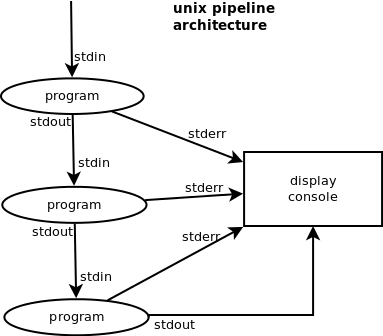
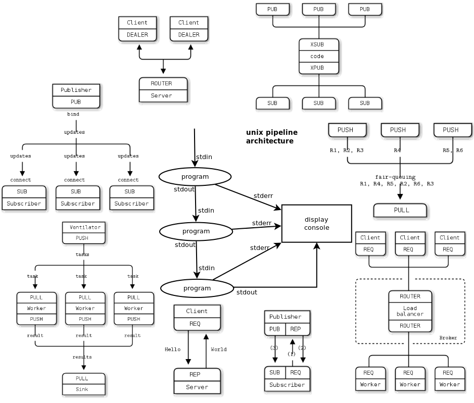

- network
- architecture
- zeromq
- unix
- research
tags:
~2012
Unix pipes NG research
You probably know unix pipes right?

Well this my current subject of interest. Since I like images I'll just leave you with images. Words are soo 2012.

[^1]
[^1]: images from zeromq website